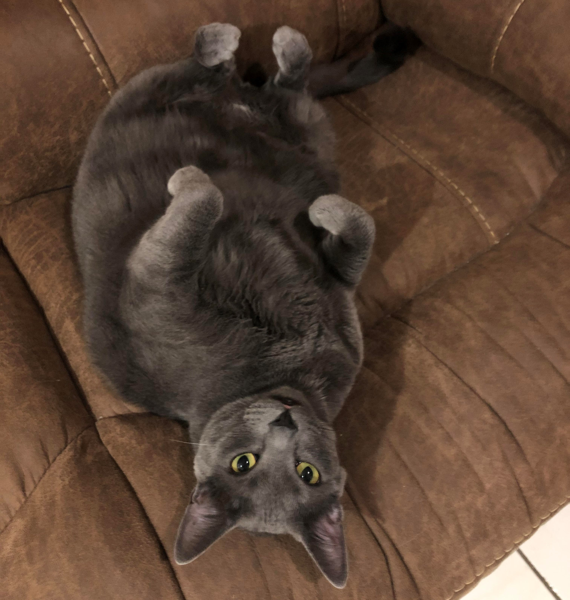

Hello!
Hello!
- I did not need or want to use these elements on my website so im just putting them here and hiding them so that i meet the requirements without disrupting the aesthetic of the website.
Inspired by a love for coding and problem-solving, I am driven to constantly grow and develop as a software engineer located in Miami, Florida. I am eager to take on new challenges and contribute to meaningful projects. Explore my portfolio to learn more about my journey and growth in the tech industry.
I'm a Junior Software Engineer with a passion for using tech to make a difference. As a former paramedic, I understand the importance of working in a fast-paced and dynamic environment. I bring that same drive and focus to software engineering, always striving to find the most innovative and efficient solutions. When I'm not coding, you can find me working on my car or gaming on my PC with one of my cats curled up in my lap. I love learning about new technologies and finding creative ways to apply them. But above all, I'm a team player who values open communication and collaboration. I believe that by working together, we can achieve great things. So whether it's coding, cars, or games, I'm always eager to dive in and learn more!
